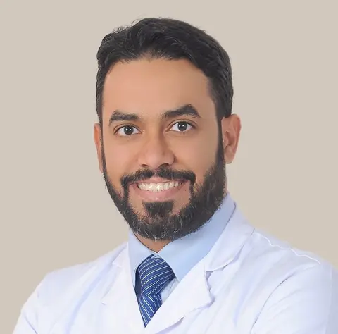

Consultant surgeon · Riyadh
Precision surgery, guided by robotics.
More than 15 years in bariatric, metabolic and general surgery; in recent years, nearly all operations robotic.
Calls are answered by Faisal, Dr. Alhazmi’s AI assistant, who can take your message.
15+
years of surgical experience
2
American Boards: Surgery and Obesity Medicine
FACS
Fellow, American College of Surgeons
“Every patient deserves time to understand all of their options, surgical and non-surgical, before any decision is made.”
The surgeon’s hands, with a robot’s steadiness.
In robotic surgery, the surgeon controls fine, wristed instruments and a magnified 3D camera from a console, working through small incisions.
Magnified 3D view
A high-definition, three-dimensional image of the operating field.
Wristed instruments
Instruments that bend and rotate for fine, controlled movement.
Small incisions
Minimally invasive access instead of one large opening.
Established operations
Sleeve, bypass, hernia and gallbladder surgery, done robotically.
Two paths to treatment
Not every patient needs surgery.
Certified in both surgery and obesity medicine, Dr. Alhazmi can build a plan around an operation, medical treatment, or both. The right path is decided after a full assessment.
Without surgery
- Medical assessment and tests
- Nutrition and activity plan
- Anti-obesity medicines when suitable
- Regular follow-up
With surgery
- Robotic sleeve or gastric bypass
- Metabolic surgery for type 2 diabetes
- Revision of a previous operation
- Long-term follow-up
Am I a candidate?
Enter your height and weight to see where you stand under international guidelines.
Your BMI
Your result will appear here.
For education only, not a diagnosis; a full assessment decides your treatment. Based on the 2022 ASMBS/IFSO guidelines; lower thresholds apply to people of Asian descent.
Treatments
Surgical and medical care for obesity and common abdominal conditions.
Robotic Surgery
Minimally invasive surgery using a robotic system, with a magnified 3D view and wristed instruments.
Learn moreBariatric Surgery
Weight-loss operations such as sleeve gastrectomy and gastric bypass, for people living with obesity.
03Metabolic Surgery
Surgery aimed at improving type 2 diabetes and other metabolic diseases linked to obesity.
04General Surgery
Gallbladder, hernia, upper GI and other common abdominal operations.
05Obesity Medicine
Non-surgical treatment of obesity, including nutrition, activity and medicines.
Every operation carries risks, including bleeding, infection, leaks and nutritional deficiencies, which are discussed in full before any decision. Long-term follow-up is essential: missing follow-up visits raises the risk of complications. Recovery times vary from person to person.
From first message to long-term follow-up.
Send a message
Reach us on WhatsApp or by phone with your question.
Full assessment
A consultation, the tests you need, and input from the nutrition team.
Your treatment
A medical plan, or preparation followed by a robotic operation and a short hospital stay.
Long-term follow-up
Ongoing support on diet, vitamins, activity and medicines.
About

Dr. Alaa Alhazmi
MD, FACS, ABS, ABOM, MBADr. Alhazmi earned an MD at The George Washington University and completed a fellowship in minimally invasive and bariatric surgery at UC Davis. Dr. Alhazmi is certified by the American Board of Surgery and the American Board of Obesity Medicine, and practiced for more than 15 years as a consultant at King Faisal Specialist Hospital & Research Centre in Riyadh.
Read the full story- Education
- MD, The George Washington University
- Fellowship
- Minimally invasive and bariatric surgery, UC Davis
- Certification
- American Board of Surgery · American Board of Obesity Medicine · Fellow, American College of Surgeons
Common questions
Is robotic surgery different from laparoscopic surgery?
Both use small incisions. In robotic surgery the surgeon operates the instruments from a console, with a magnified 3D view and wristed instruments. Which approach suits you is discussed at your consultation.
Am I a candidate for weight-loss surgery?
The 2022 ASMBS/IFSO guidelines recommend surgery for adults with a BMI of 35 or more, and considering it from 30 with metabolic disease. The decision is made only after a full assessment.
What are the risks of weight-loss surgery?
As with any major operation, risks include bleeding, infection, a leak where the stomach or bowel is joined, and blood clots. Later problems can include vitamin and mineral deficiencies, gallstones, narrowing at the join (stricture) and hernias. In a large study of 209,116 patients cited by ASMBS, the risk of death was 0.16%, about 1 in 600. NIDDK reports that about one-third of patients need a follow-up procedure or hospital stay within 5 years. Your own risk depends on your health and the operation, and is reviewed with you before any decision.
How much weight will I lose?
It depends on the operation and on you. ASMBS reports that more than 95% of patients lose half or more of their excess weight, and that gastric bypass patients lose about 70% of their excess weight on average, then regain about 5% of it after 2 years or more. Results vary from person to person and cannot be guaranteed.
Are weight-loss medications an alternative to surgery?
Medications such as semaglutide and tirzepatide help many people lose weight, and some patients use them before or after surgery. In a real-world study presented at the 2025 ASMBS annual meeting, patients lost about five times more weight two years after sleeve gastrectomy or gastric bypass than with these injections. Weight often returns when the medication is stopped. The right choice depends on your health, goals and preferences, and both options are discussed at your consultation.
What will I eat after surgery?
You start on liquids for a few weeks, then move to soft foods and later to solid food, following your team’s plan. ASMBS advises drinking at least 64 ounces (about 1.9 liters) of fluid and eating 60 to 100 grams of protein a day, and limiting foods high in sugar and starch. Many programs also use a special diet for 2 to 3 weeks before surgery to shrink the liver and make the operation safer.
Will I need vitamins after surgery?
Yes, for life. Supplements usually include a multivitamin, vitamin B12, calcium, vitamin D and iron, with blood tests at least once a year. Skipping them can lead to anemia, bone loss and nerve problems.
When can I return to work and exercise?
ASMBS reports that most patients return to work within one to two weeks, depending on the operation and the job. Walking starts within hours of surgery; keep activity low-impact for the first month, then build toward about 30 minutes of moderate exercise a day. Your own timeline is agreed with you before surgery.
Will I lose hair after surgery?
Some hair loss is common 3 to 6 months after surgery and is almost always temporary. Getting enough protein, vitamins and minerals helps it grow back.
When is it safe to become pregnant after surgery?
Most groups advise waiting 12 to 18 months, while weight loss is fastest and nutrition settles. Fertility often improves after surgery, and birth control pills are less reliable while weight is changing, so plan contraception, such as an IUD, before surgery. Talk to your team before trying to conceive.
Can I fast in Ramadan after weight-loss surgery?
Published recommendations differ: an international expert consensus advises delaying fasting for about 6 to 12 months after surgery, while some hospital programs, such as the NHS leaflet below, advise 12 to 18 months. Dr. Alhazmi generally recommends waiting 6 to 12 months, depending on the operation and your recovery, because of the risk of dehydration, low blood sugar and nutritional deficiencies. Fasting then needs a plan for fluids, protein and vitamins, and should stop if symptoms of intolerance persist. If your surgery falls close to Ramadan, the timing can be planned with you. Discuss your plan with Dr. Alhazmi before you fast.
Can the weight come back, and what follow-up will I need?
Obesity is a long-term disease, and some weight regain is possible. ASMBS advises visits every few months in the first year, then a yearly review with a bariatric specialist for life. If weight returns, options include lifestyle support, medication and, in some cases, further surgery.
Can I get a second opinion on a surgery recommendation?
Yes. Send your question on WhatsApp. If Dr. Alhazmi needs your medical reports, the team will ask for your consent first.
Does health insurance cover weight-loss surgery?
Under the basic health insurance policy set by Saudi Arabia’s Council of Health Insurance (essential benefit package effective October 2022), approved bariatric operations are covered up to SAR 15,000 per policy period, with a copayment of 0–20% capped at SAR 1,000. Coverage depends on your policy and on clinical criteria, so confirm with your insurer before surgery.
Who answers when I call?
Calls are answered by Faisal, Dr. Alhazmi’s AI assistant, who can take your message.
Already advised to have surgery?
Send your question on WhatsApp for a second opinion from Dr. Alhazmi.
Calls are answered by Faisal, Dr. Alhazmi’s AI assistant, who can take your message.